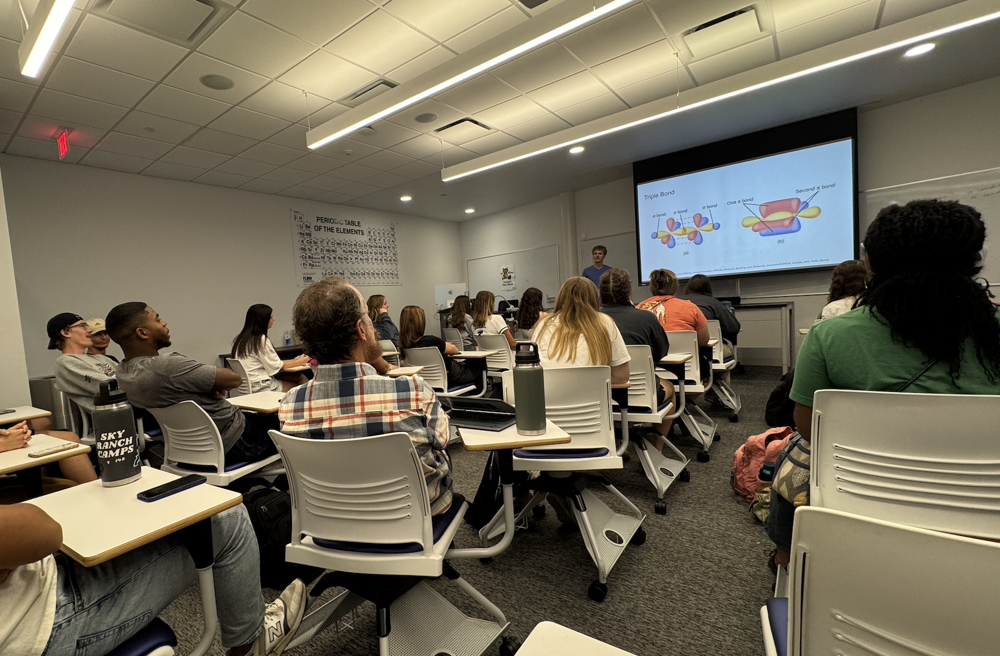
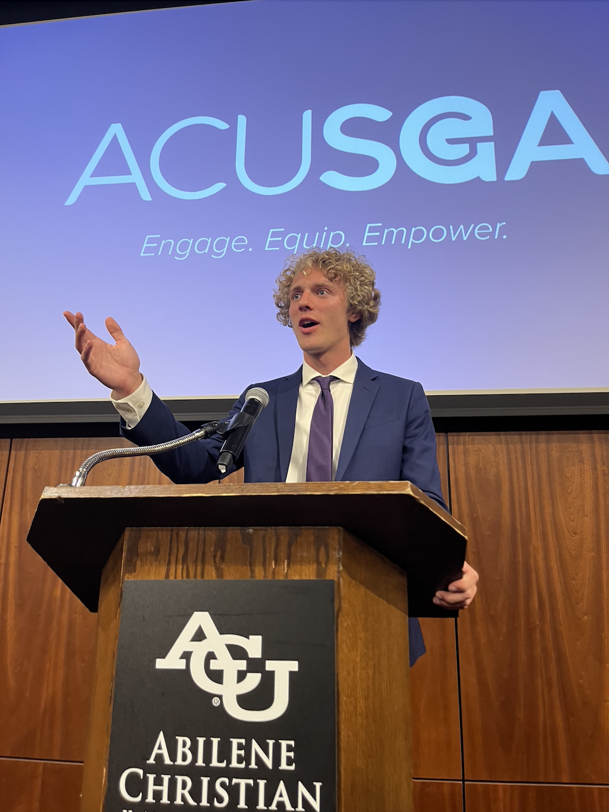

Teaching & Service
The moment a concept finally clicks for a student is one of my favorite parts of science. I have taught and tutored chemistry since my second year of college, and I have served my communities through student government, campus organizations, and mentoring.
In the classroom and the lab
Graduate Teaching Assistant
The University of Texas at Austin · Aug 2026–presentCH 104M, Introduction to Chemical Practice Lab I. I teach eight first-year general chemistry laboratory sections, teaching ~160 students concepts, techniques, and data analysis.
Teaching Assistant, Organic Chemistry Laboratory
Abilene Christian University · Aug 2025–May 2026Taught organic chemistry wet-lab techniques and characterization to undergraduates.
Tutor
EXCEL Tutoring and Testing · Jan–May 2024Designed individualized tutoring sessions in chemistry, physics, and biology.


Serving the community
Texas Leadership Research Scholars Program
The University of Texas at Austin · Sep 2026–presentA cohort of doctoral scholars focused on research, peer mentoring, and leadership development.
Class President and Class Senator
ACU Student Government Association · Aug 2023–May 2026Chaired the Student Affairs Committee and organized ACU Green Week, a campus initiative for sustainable practices.
Chaplain, Chem Club
Abilene Christian University · Aug 2024–May 2026Led weekly discussions on topics in faith and science, making a place for student and faculty discourse.
Mentor Group Leader and Steering Committee
Wildcat Week (freshman orientation), ACU · May 2023–Aug 2024Mentored incoming first-year students and helped plan orientation.
Science Ambassador
ACU Departments of Biology and of Chemistry and Biochemistry · Aug 2023–Feb 2024